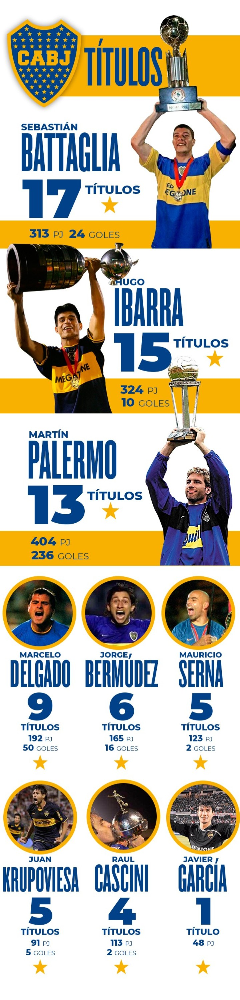
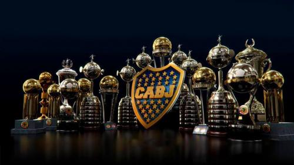
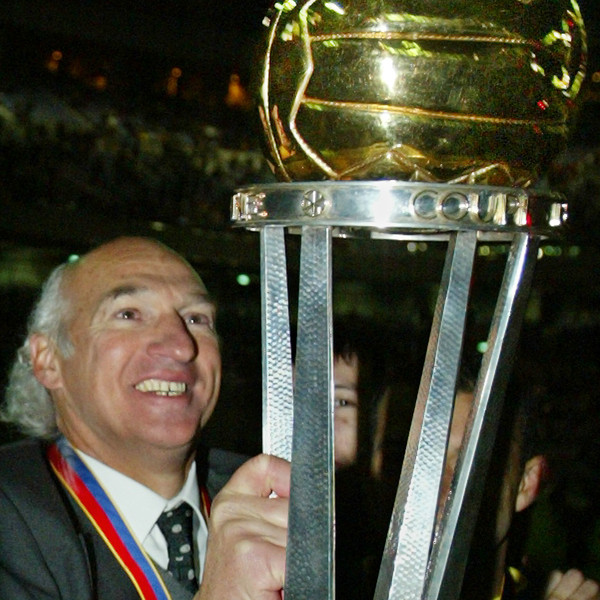

EL QUE MAS TITULOS TIENE
Boca Juniors es el club mas copero de Argentina, lidera el ranking con 74 titulos y asi domina el ambito nacional, ademas de ponerse en la misma mesa que los grandes clubes del mundo y darle pelea a cualquier club como en las finales intercontinentales ganadas al Borussia monchegladbach, Real Madrid y Milan, y sumando un total de 18 torneos internacionales.
Su grandeza tambien se destaca en las 6 libertadores ganadas en su historia, el segundo mas ganador del certamen solo detras de Independiente, obteniendo un bicampeonato en los años 2000 y 2001.
Ademas de todos los titulos tantos locales como internacionales y de noches inolvidables, Boca Juniors nunca descendió, toda una historia de GRANDEZA y de PRIMERA.
  